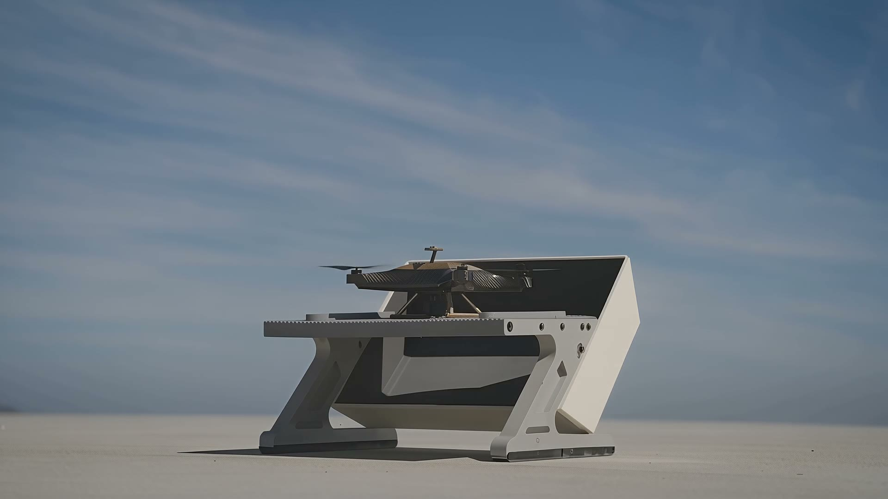

Intelligent drone swarms for the sites the world runs on. Every flight rebuilds your site as a measurable 3D twin — your team spends their days looking at what matters, not looking for it.
The sites the world runs on are still walked, measured, and watched by hand. Our aircraft put all three on autopilot — the same fleet maps the site, screens its condition, and keeps it covered.
Aircraft fused with the cameras you already own into one live picture — detection, tracking, and eyes on scene from minute zero.
Scheduled flights rebuild an active site as a measurable 3D model — progress you can measure, quantities you can bill against, a day-by-day record of the build.
Routine scans of roofs, structures, and hard-access assets that flag exactly which spots need a person — so your experts arrive knowing where to look and why.
One fleet, one Brain, one twin — put to work three different ways.
Aircraft rotate on a hot-swap cycle — the replacement is on station before the active unit descends. No gaps, no pilots.
Drone video and the cameras you already own become one live, geolocated picture — every object detected, classified, and tracked.
A verified event has eyes on it immediately — your people respond with facts, and a person makes every consequential call.
The fleet covers the full site before your team's first coffee — every row, every pass, the same route every day.
The Brain rebuilds the site as a measurable 3D model and compares it against yesterday's twin and the design files.
Progress, quantities, and what changed land in the morning view — with a measured accuracy report attached to every deliverable.
Slow, deliberate passes over roofs, facades, and hard-access assets — the same standoff distance, every time.
Every surface compared to its previous scan — movement, wear, and anomalies surface as candidates, in numbers.
The few spots that look off get flagged for hands-on review. Screening directs the inspection — certified sign-off stays human.
Purpose-built for our mission profile, down to the individual part. One airframe, hot-swap payloads. Designed for NDAA compliance across the entire stack.

Commercial builds and heavy civil — progress documented daily, quantities measured, and the site covered overnight by the same fleet.
Utility-scale builds and operating plants — every post and row checked during construction, every acre covered after energization.
Substations under CIP-014, transmission yards, data centers — secured while operating, documented while being built.
Refineries, plants, and tank farms — continuous coverage outside the fence, condition screening across the estate.
Universities and municipalities — existing cameras fused with aircraft into one picture, and public construction documented from the same fleet.
Force protection and perimeter awareness at scale — where the platform goes next.
One system, one twin, one clear picture — and still a human decision. For briefings, pilots, and design partnerships.
Talk to the founders →Individually they do — as a system they don't. Each pod holds 2–3 aircraft rotating on a hot-swap cycle: the replacement is on station before the active unit descends. Coverage gap: zero.
No — and we say that up front. Flying can't replace every hand measurement; it tells your team exactly which few need one. Certified surveys and engineering sign-off stay with your people, and every deliverable ships with its own measured accuracy report.
We contract an honest availability number for your region instead of promising 100%. In high winds the system degrades gracefully — aircraft perch with sensors live, and you're notified the moment coverage state changes.
Yes. Operations run under FAA Part 107 with beyond-visual-line-of-sight waivers — fenced industrial sites at low altitude are the most established approval profile there is. Nobody hand-flies anything: a certificated remote supervisor oversees the fleet, and a human makes every consequential call.
No facial recognition — ever. The system tracks objects and behaviors, not identities. You define no-look zones, retention limits are contractual, and every operator view is logged and auditable.
A per-site subscription. Security deployments anchor against the cost of a single 24/7 guard post; mapping and inspection engagements anchor against the field-weeks they displace. Hardware, maintenance, and software included — no capex.
A 90-day paid pilot on one site, with metrics agreed up front — coverage uptime and false alerts for security; model accuracy against your own survey and delivery cadence for mapping. If the numbers hit, it converts to an annual engagement.